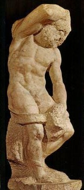

I Take Another Look
He hewed these men into the marble block from front to back, like reliefs on a wall, each muscular form partially encased in the element of which it's made, a yoke across his shoulders or an even larger burden under which he bends from the waist, fetters that hold him down, pull him back as he struggles. Vae victis. For every victor, rich in coins, palaces and laurel wreaths, the vanquished a legion, driven back, pushed to the ground, kept from rising, reaching their full height, standing on their own feet. I see why people have named them slaves. I feel the rage, powerlessness, defeat.



The Lesson
Stone beings, stone ties. They have no tool to knock their way out. Someone from the outside has to find their human forms locked up inside, and then chisel them out, set them free. These statues show me the process. Now I see in the parts what he meant about marble and stone, the deus ex machina, the man of flesh and bone, the artist, caught in his own mortal cage. He knows his work's the only way to engage the frozen and the quick; a measure of delight against the rapid dimming of the light.
- Rina Ferrarelli
Stone beings, stone ties. They have no tool to knock their way out. Someone from the outside has to find their human forms locked up inside, and then chisel them out, set them free. These statues show me the process. Now I see in the parts what he meant about marble and stone, the deus ex machina, the man of flesh and bone, the artist, caught in his own mortal cage. He knows his work's the only way to engage the frozen and the quick; a measure of delight against the rapid dimming of the light.
- Rina Ferrarelli